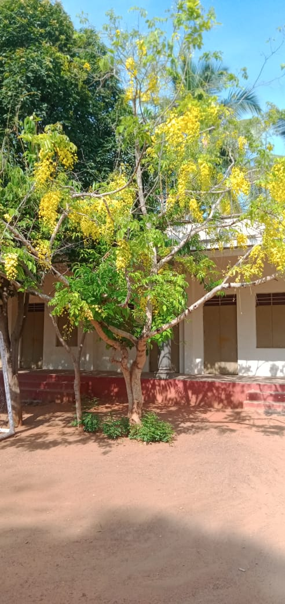

SRI NARAYANA MATRIC.HR.SEC.SCHOOL
Poolovapatti
Coimbatore-641101

Tamil Name: மஞ்சள் சரக்கொன்றை Botanical Name: Cassia fistula Biological Classification: Family: Fabaceae Medicinal uses : Helps in relieving constipation Accelerates the healing process of cuts and injuries Reduces inflammation and infection Helps in regulating blood sugar levels Improves insulin sensitivity Growing Areas: Tropical climates, especially South India